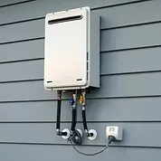

Upgrading to a tankless water heater is a smart move for most homeowners. These on-demand systems deliver endless hot water, save energy (up to 30% on bills), and free up space by eliminating bulky tanks. But there's a common roadblock: your home's existing gas pipe often needs upsizing. If you're planning this upgrade, here's why it happens and how our team at Angle Stop Plumbing makes it seamless.

The Core Issue: Gas Flow Demands of Tankless Heaters
Tankless water heaters (also called tankless or instantaneous) heat water directly as it flows through the unit. Unlike traditional tank heaters, which sip gas steadily to maintain a reserve, tankless models require a high-volume burst of gas to superheat incoming cold water instantly.
Key Reasons for Pipe Upsizing
- Higher BTU Requirements: Tankless units typically demand 140,000–199,000 BTUs/hour (or more for whole-home models). Standard tank heaters max out at 40,000 BTUs. Your current 1/2-inch gas line can't deliver that surge without pressure drops.
- Flow Rate Physics: Gas pipes follow the principles of fluid dynamics. Undersized pipes create friction and velocity issues, leading to inadequate pressure. For example:
- A 1/2-inch pipe might handle 100,000 BTUs over 50 feet.
- But for 180,000 BTUs, you need 3/4-inch or 1-inch pipe to maintain (pressure drop formula, where smaller diameter spikes losses).
- Code Compliance: International Fuel Gas Code (IFGC) and local regs (e.g., UPC) mandate proper sizing via pipe charts. Undersized lines risk:
Problem
Consequence
Insufficient heat
Lukewarm water, especially in winter or multi-fixture use
Safety hazards
Incomplete combustion, CO production, or unit shutdowns
Warranty void
Manufacturers like Rinnai/Navien require verified gas capacity
In short: Your pipe works fine for a tank unit's "trickle" but chokes on tankless' "firehose" demand.
Real-World Example
Imagine a 2,000 sq ft home with a 150,000 BTU tankless. A typical 1/2-inch black iron pipe from the meter (say, 40 ft run) delivers only ~90,000 BTUs effectively. Result? The unit throttles output to 50-60% capacity. Upsizing to 3/4-inch restores full performance.
How Angle Stop Plumbing Solves This – Hassle-Free
Don't let gas line woes derail your upgrade. At Angle Stop Plumbing, we're tankless specialists serving Middle Tennessee with 20+ years of experience. Here's our streamlined process:
1. Free Gas Line Assessment
- We inspect your setup: meter size, pipe material (black iron/CSST), length, bends, and existing appliances.
- Use digital manometers and BTU calculators for precise sizing recs.
2. Expert Upsizing & Installation
- Safe Replacement: Cut, thread, and install larger black iron or CSST lines. We handle permits and pressure tests (to 10-15 psi).
- Full Tankless Install: Pair with venting, water lines, and electrical. Brands we love: Rinnai and Navien.
- Minimal Disruption: Often done in 1-2 days; we protect floors and clean up.
3. Added Perks
- Energy Rebates: Help claim up to $600 federal tax credits.
- Warranty Protection: Certified installs ensure 12-15 year coverage.
- Financing Options: 0% plans available.
Customer Story: "Our old 1/2-inch line couldn't feed the new tankless. Angle Stop upsized it seamlessly – now endless hot water for our family of 6!" – Sarah T., Lebanon, TN
Ready to Upgrade?
Tankless = efficiency + comfort, but only with proper gas infrastructure. Contact Angle Stop Plumbing today for a free quote: Call (615) 398-3048 or visit www.anglestopplumbing.com.
Let's size it right and get you flowing!
Angle Stop Plumbing: Licensed, Insured, 100% Satisfaction Guaranteed.